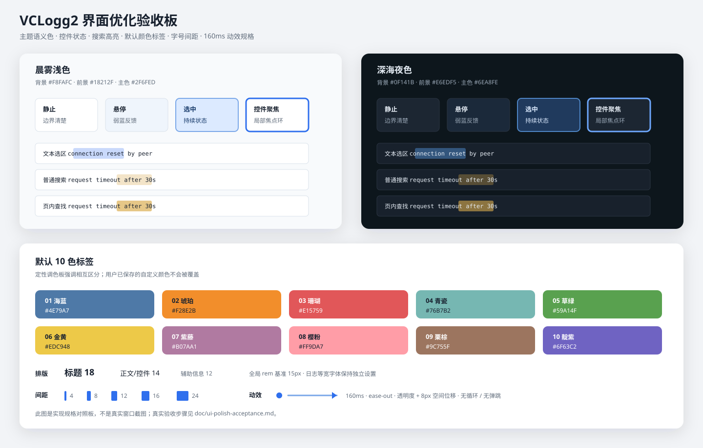

01
大文件也能从容浏览
后台建立行索引，按需解码可见内容，并通过虚拟化表格控制内存占用。
Rust × GPUI 原生桌面体验 2026
VCLogg2 为持续增长的日志和复杂排障场景而生。快速打开、灵活检索、稳定浏览， 让你把注意力留给真正重要的线索。
10:42:16.103 INFO gateway request accepted10:42:16.118 DEBUG route=/api/events status=20010:42:17.651 WARN upstream timeout after 30s10:42:17.653 DEBUG policy=retry attempt=210:42:18.010 ERROR connection reset by peer10:42:18.023 DEBUG backoff=240ms region=cn-east10:42:18.266 INFO request recovered status=20010:42:18.311 DEBUG trace flushed duration=3ms为真实排障流程设计
打开、定位、对比、标记与导出在一个原生工作区里自然衔接，不需要先把日志搬进另一套系统。
后台建立行索引，按需解码可见内容，并通过虚拟化表格控制内存占用。
多关键词、大小写、字节正则，以及当前标签、多标签和目录三种范围自由组合。
支持末尾跟随。纯追加文件只索引新增内容，截断或替换时安全回退到完整重建。
行标记、十色标签、日志级别着色与匹配高亮，让复盘时仍能看见分析脉络。
标签顺序、查询、标记、视口与呈现偏好都会保存，下一次打开即可接着分析。
流式导出当前或全局结果，既可按文件分组，也可按日志时间戳稳定合并。
清楚，也耐看
晨雾浅色与深海夜色两套主题，以明确的层级、克制的强调色和稳定的交互反馈， 帮助你分辨悬停、选中、普通命中与当前定位结果。

在你的桌面上
原生窗口、文件拖放、系统废纸篓与文件打开集成，在不同平台上保持一致。
Windows 10 / 11 · x64
便携 ZIP，解压即可使用macOS 15 · Apple Silicon
原生 App 包与安装脚本Ubuntu 22.04 · x86_64
桌面与 MIME 类型集成三步开始
从 GitHub Releases 获取对应平台的发布包。
通过快捷键、拖放或命令行打开一个或多个日志。
组合关键词、范围与筛选条件，快速找到关键行。